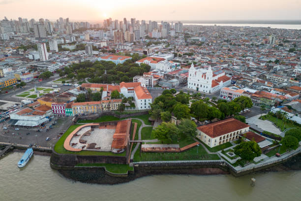
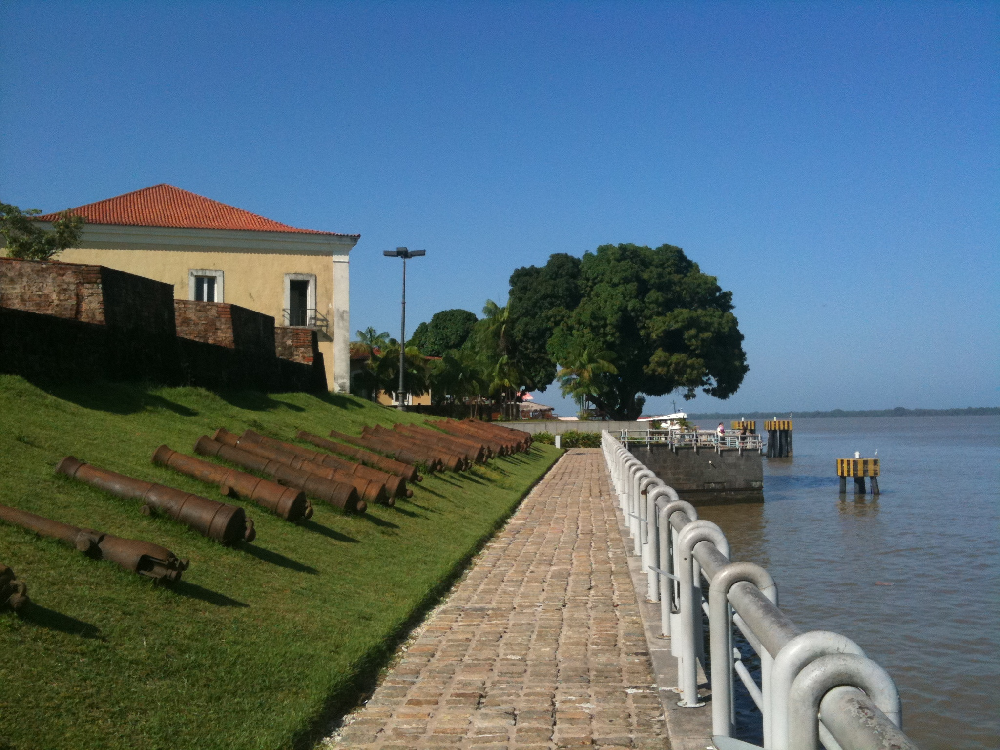
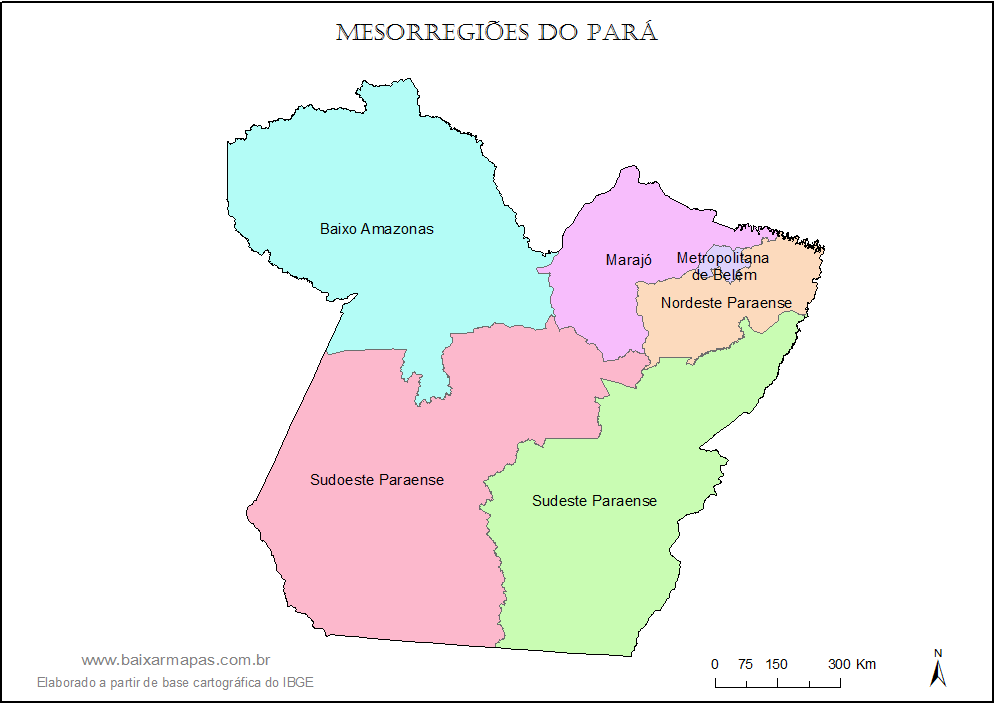

Visão Geral

O Pará localiza-se na porção oriental da Amazônia brasileira. Faz fronteira com os estados do Amazonas, Amapá, Maranhão, Tocantins, Mato Grosso e Roraima, além de possuir acesso ao Oceano Atlântico.
A capital, Belém, é um dos mais importantes centros econômicos, históricos e culturais da Região Norte, servindo como porta de entrada para a Amazônia.
Dados Gerais
| Informação | Descrição |
|---|---|
| Capital | Belém |
| Região | Norte |
| Área | Aproximadamente 1.247.000 km² |
| Gentílico | Paraense |
| Bioma | Amazônia |
| Fuso Horário | UTC−3 |
História

A ocupação colonial da região iniciou-se no século XVII com a fundação de Belém, em 1616. O território teve papel estratégico para a Coroa Portuguesa no controle da Amazônia e das rotas fluviais do norte do continente.
Entre os acontecimentos históricos mais marcantes destaca-se a Cabanagem (1835–1840), importante revolta popular ocorrida durante o período imperial.
Geografia
O território paraense é caracterizado por extensas florestas tropicais, grandes rios e vastas áreas de várzea. O Rio Amazonas atravessa o estado e exerce grande influência sobre o transporte, a economia e o modo de vida local.
O clima predominante é o equatorial, quente e úmido durante praticamente todo o ano.
Economia
A economia do Pará destaca-se pela mineração, agropecuária, indústria, produção de energia e extrativismo vegetal.
O estado é reconhecido internacionalmente pela produção de minério de ferro, especialmente na região de Carajás, além da exportação de bauxita, cobre, manganês e produtos florestais.
Cultura
A cultura paraense é marcada pela influência indígena, africana, europeia e amazônica. O estado é conhecido por manifestações como o Círio de Nazaré, o carimbó, as aparelhagens e a rica culinária regional.
Entre os pratos típicos destacam-se o pato no tucupi, tacacá, maniçoba, açaí paraense e diversos peixes amazônicos.
Turismo
Os principais destinos turísticos incluem Alter do Chão, a Ilha do Marajó, o Mercado Ver-o-Peso, a Estação das Docas, a Serra dos Carajás e inúmeras áreas de preservação ambiental da Amazônia.
Mapa do Estado
